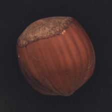
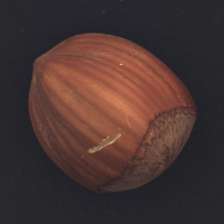

【補足】 異常部位検知 - AutoEncoder
本章では AutoEncoder を用いた異常部位検知を紹介します。
モデルの学習に大幅な時間を要します。そのためリアルタイムの講義では実装のポイントのみお伝えします。講義終了後に復習も兼ねて実装に挑戦してみてください。
GPU 環境を推奨します。

今回はドイツのMVTec社が公開したデータセットを使用します。 解説論文はコンピュータビジョンの世界トップ会議である CVPR 2019 で採択されています。
▼ データセット
データセットの準備
[1]:
# Zip ファイル解凍
!unzip -q ~~.zip
[2]:
import numpy as np
import pandas as pd
import matplotlib.pyplot as plt
import seaborn as sns
[17]:
from glob import glob
train_img_paths = sorted(glob('/content/hazelnut/train/good/*.png'))
len(train_img_paths)
[17]:
391
[18]:
train_img_paths[:3]
[18]:
['/content/hazelnut/train/good/000.png',
'/content/hazelnut/train/good/001.png',
'/content/hazelnut/train/good/002.png']
[19]:
test_dirs = glob('/content/hazelnut/test/*')
test_img_paths = []
for dir in test_dirs:
test_img_paths_ = sorted(glob(dir+'/*.png'))
test_img_paths.extend(test_img_paths_)
len(test_img_paths)
[19]:
110
[20]:
test_img_paths[:3]
[20]:
['/content/hazelnut/test/cut/000.png',
'/content/hazelnut/test/cut/001.png',
'/content/hazelnut/test/cut/002.png']
[21]:
from PIL import Image
[25]:
# 確認：正常データ
Image.open(train_img_paths[0]).convert('RGB').resize((224, 224))
[25]:

[26]:
# 確認：異常データ
Image.open(test_img_paths[0]).convert('RGB').resize((224, 224))
[26]:

[27]:
import torch
import torchvision.transforms as T
from torch.utils.data import DataLoader, Dataset
[33]:
# データセット作成
class Custom_Dataset(Dataset):
def __init__(self,img_list):
self.img_list = img_list
self.prepocess = T.Compose([T.Resize((224, 224)), T.ToTensor()])
def __getitem__(self,idx):
img = Image.open(self.img_list[idx]).convert('RGB')
img = self.prepocess(img)
return img
def __len__(self):
return len(self.img_list)
[39]:
# 正常データのみを使用する
train_list = train_img_paths[:int(len(train_img_paths)*0.8)]
val_list = train_img_paths[int(len(train_img_paths)*0.8):]
len(train_list), len(val_list)
[39]:
(312, 79)
[64]:
train_dataset = Custom_Dataset(train_list)
val_dataset = Custom_Dataset(val_list)
train_loader = DataLoader(train_dataset, batch_size=16)
val_loader = DataLoader(val_dataset, batch_size=16)
モデル構築
[65]:
import torch.nn as nn
import torch.nn.functional as F
import torch.optim as optim
from tqdm import tqdm
[66]:
class AutoEncoder(nn.Module):
def __init__(self):
super(AutoEncoder, self).__init__()
self.Encoder = nn.Sequential(self.create_convblock(3, 16),
nn.MaxPool2d((2, 2)),
self.create_convblock(16, 32),
nn.MaxPool2d((2,2)),
self.create_convblock(32, 64),
nn.MaxPool2d((2, 2)),
self.create_convblock(64, 128),
nn.MaxPool2d((2, 2)),
self.create_convblock(128, 256),
nn.MaxPool2d((2, 2)),
self.create_convblock(256, 512),
)
self.Decoder = nn.Sequential(self.create_deconvblock(512, 256),
self.create_convblock(256, 256),
self.create_deconvblock(256, 128),
self.create_convblock(128, 128),
self.create_deconvblock(128, 64),
self.create_convblock(64, 64),
self.create_deconvblock(64, 32),
self.create_convblock(32, 32),
self.create_deconvblock(32, 16),
self.create_convblock(16, 16),
)
self.last_layer = nn.Conv2d(16, 3, 1, 1)
def create_convblock(self,i_fn,o_fn):
conv_block = nn.Sequential(nn.Conv2d(i_fn, o_fn, 3, 1, 1),
nn.BatchNorm2d(o_fn),
nn.ReLU(),
nn.Conv2d(o_fn, o_fn, 3, 1, 1),
nn.BatchNorm2d(o_fn),
nn.ReLU()
)
return conv_block
def create_deconvblock(self, i_fn, o_fn):
deconv_block = nn.Sequential(nn.ConvTranspose2d(i_fn, o_fn, kernel_size=2, stride=2),
nn.BatchNorm2d(o_fn),
nn.ReLU())
return deconv_block
def forward(self,x):
x = self.Encoder(x)
x = self.Decoder(x)
x = self.last_layer(x)
return x
[70]:
from torchsummary import summary
model = AutoEncoder().to('cuda')
summary(model, input_size=(3, 224, 224))
----------------------------------------------------------------
Layer (type) Output Shape Param #
================================================================
Conv2d-1 [-1, 16, 224, 224] 448
BatchNorm2d-2 [-1, 16, 224, 224] 32
ReLU-3 [-1, 16, 224, 224] 0
Conv2d-4 [-1, 16, 224, 224] 2,320
BatchNorm2d-5 [-1, 16, 224, 224] 32
ReLU-6 [-1, 16, 224, 224] 0
MaxPool2d-7 [-1, 16, 112, 112] 0
Conv2d-8 [-1, 32, 112, 112] 4,640
BatchNorm2d-9 [-1, 32, 112, 112] 64
ReLU-10 [-1, 32, 112, 112] 0
Conv2d-11 [-1, 32, 112, 112] 9,248
BatchNorm2d-12 [-1, 32, 112, 112] 64
ReLU-13 [-1, 32, 112, 112] 0
MaxPool2d-14 [-1, 32, 56, 56] 0
Conv2d-15 [-1, 64, 56, 56] 18,496
BatchNorm2d-16 [-1, 64, 56, 56] 128
ReLU-17 [-1, 64, 56, 56] 0
Conv2d-18 [-1, 64, 56, 56] 36,928
BatchNorm2d-19 [-1, 64, 56, 56] 128
ReLU-20 [-1, 64, 56, 56] 0
MaxPool2d-21 [-1, 64, 28, 28] 0
Conv2d-22 [-1, 128, 28, 28] 73,856
BatchNorm2d-23 [-1, 128, 28, 28] 256
ReLU-24 [-1, 128, 28, 28] 0
Conv2d-25 [-1, 128, 28, 28] 147,584
BatchNorm2d-26 [-1, 128, 28, 28] 256
ReLU-27 [-1, 128, 28, 28] 0
MaxPool2d-28 [-1, 128, 14, 14] 0
Conv2d-29 [-1, 256, 14, 14] 295,168
BatchNorm2d-30 [-1, 256, 14, 14] 512
ReLU-31 [-1, 256, 14, 14] 0
Conv2d-32 [-1, 256, 14, 14] 590,080
BatchNorm2d-33 [-1, 256, 14, 14] 512
ReLU-34 [-1, 256, 14, 14] 0
MaxPool2d-35 [-1, 256, 7, 7] 0
Conv2d-36 [-1, 512, 7, 7] 1,180,160
BatchNorm2d-37 [-1, 512, 7, 7] 1,024
ReLU-38 [-1, 512, 7, 7] 0
Conv2d-39 [-1, 512, 7, 7] 2,359,808
BatchNorm2d-40 [-1, 512, 7, 7] 1,024
ReLU-41 [-1, 512, 7, 7] 0
ConvTranspose2d-42 [-1, 256, 14, 14] 524,544
BatchNorm2d-43 [-1, 256, 14, 14] 512
ReLU-44 [-1, 256, 14, 14] 0
Conv2d-45 [-1, 256, 14, 14] 590,080
BatchNorm2d-46 [-1, 256, 14, 14] 512
ReLU-47 [-1, 256, 14, 14] 0
Conv2d-48 [-1, 256, 14, 14] 590,080
BatchNorm2d-49 [-1, 256, 14, 14] 512
ReLU-50 [-1, 256, 14, 14] 0
ConvTranspose2d-51 [-1, 128, 28, 28] 131,200
BatchNorm2d-52 [-1, 128, 28, 28] 256
ReLU-53 [-1, 128, 28, 28] 0
Conv2d-54 [-1, 128, 28, 28] 147,584
BatchNorm2d-55 [-1, 128, 28, 28] 256
ReLU-56 [-1, 128, 28, 28] 0
Conv2d-57 [-1, 128, 28, 28] 147,584
BatchNorm2d-58 [-1, 128, 28, 28] 256
ReLU-59 [-1, 128, 28, 28] 0
ConvTranspose2d-60 [-1, 64, 56, 56] 32,832
BatchNorm2d-61 [-1, 64, 56, 56] 128
ReLU-62 [-1, 64, 56, 56] 0
Conv2d-63 [-1, 64, 56, 56] 36,928
BatchNorm2d-64 [-1, 64, 56, 56] 128
ReLU-65 [-1, 64, 56, 56] 0
Conv2d-66 [-1, 64, 56, 56] 36,928
BatchNorm2d-67 [-1, 64, 56, 56] 128
ReLU-68 [-1, 64, 56, 56] 0
ConvTranspose2d-69 [-1, 32, 112, 112] 8,224
BatchNorm2d-70 [-1, 32, 112, 112] 64
ReLU-71 [-1, 32, 112, 112] 0
Conv2d-72 [-1, 32, 112, 112] 9,248
BatchNorm2d-73 [-1, 32, 112, 112] 64
ReLU-74 [-1, 32, 112, 112] 0
Conv2d-75 [-1, 32, 112, 112] 9,248
BatchNorm2d-76 [-1, 32, 112, 112] 64
ReLU-77 [-1, 32, 112, 112] 0
ConvTranspose2d-78 [-1, 16, 224, 224] 2,064
BatchNorm2d-79 [-1, 16, 224, 224] 32
ReLU-80 [-1, 16, 224, 224] 0
Conv2d-81 [-1, 16, 224, 224] 2,320
BatchNorm2d-82 [-1, 16, 224, 224] 32
ReLU-83 [-1, 16, 224, 224] 0
Conv2d-84 [-1, 16, 224, 224] 2,320
BatchNorm2d-85 [-1, 16, 224, 224] 32
ReLU-86 [-1, 16, 224, 224] 0
Conv2d-87 [-1, 3, 224, 224] 51
================================================================
Total params: 6,996,979
Trainable params: 6,996,979
Non-trainable params: 0
----------------------------------------------------------------
Input size (MB): 0.57
Forward/backward pass size (MB): 183.27
Params size (MB): 26.69
Estimated Total Size (MB): 210.54
----------------------------------------------------------------
[1]:
epoch_num = 500
device = 'cuda'
best_loss = None
model = AutoEncoder().to(device)
limit_epoch = 100
optimizer = optim.Adam(model.parameters())
criterion = nn.MSELoss()
loss_list = {'train': [], 'val': []}
counter = 0
for e in range(epoch_num):
total_loss = 0
model.train()
with tqdm(train_loader) as pbar:
for itr , data in enumerate(pbar):
optimizer.zero_grad()
data = data.to(device)
output = model(data)
loss = criterion(output , data)
total_loss += loss.detach().item()
pbar.set_description(f'[train] Epoch {e+1:03}/{epoch_num:03} Itr {itr+1:02}/{len(pbar):02} Loss {total_loss/(itr+1):.3f}')
loss.backward()
optimizer.step()
loss_list['train'].append(total_loss)
total_loss = 0
model.eval()
with tqdm(val_loader) as pbar:
for itr, data in enumerate(pbar):
data = data.to(device)
with torch.no_grad():
output = model(data)
loss = criterion(output , data)
total_loss += loss.detach().item()
pbar.set_description(f'[ val ] Epoch {e+1:03}/{epoch_num:03} Itr {itr+1:02}/{len(pbar):02} Loss {total_loss/(itr+1):.3f}')
if best_loss is None or best_loss > total_loss/(itr+1):
if best_loss is not None:
print(f'update best_loss {best_loss:.6f} to {total_loss/(itr+1):.6f}')
best_loss = total_loss/(itr+1)
model_path = 'AutoEncoder_model.pth'
torch.save(model.state_dict(), model_path)
counter = 0
else:
counter += 1
if limit_epoch <= counter:
break
loss_list['val'].append(total_loss)
再構成誤差の目視確認
[72]:
import cv2
[74]:
# 推論：正常データ
margin_w = 10
pretrained_model = AutoEncoder().cuda()
model_path = '/content/AutoEncoder_model.pth'
pretrained_model.load_state_dict(torch.load(model_path))
preprocess = T.Compose([T.Resize((224, 224)), T.ToTensor()])
pretrained_model.eval()
good_loss_list = []
for path in tqdm(val_list):
img = Image.open(path).convert('RGB')
img = preprocess(img).unsqueeze(0).cuda()
with torch.no_grad():
output = pretrained_model(img)[0]
output = output.cpu().numpy().transpose(1, 2, 0)
output = np.uint8(np.maximum(np.minimum(output*255, 255), 0))
origin = np.uint8(img[0].cpu().numpy().transpose(1, 2, 0)*255)
# 再構成誤差
diff = np.uint8(np.abs(output.astype(np.float32) - origin.astype(np.float32)))
good_loss_list.append(np.sum(diff))
# 可視化
heatmap = cv2.applyColorMap(diff, cv2.COLORMAP_JET)
margin = np.ones((diff.shape[0], margin_w, 3))*255
result = np.concatenate([origin[:,:,::-1], margin, output[:,:,::-1], margin, heatmap], axis=1)
out_path = path.split('/')[-2] + '_' + path.split('/')[-1]
cv2.imwrite(out_path, result)
100%|██████████| 79/79 [00:05<00:00, 14.91it/s]
[75]:
# 推論：異常データ
margin_w = 10
pretrained_model = AutoEncoder().cuda()
model_path = '/content/AutoEncoder_model.pth'
pretrained_model.load_state_dict(torch.load(model_path))
preprocess = T.Compose([T.Resize((224, 224)), T.ToTensor()])
pretrained_model.eval()
anomaly_loss_list = []
for path in tqdm(test_img_paths):
img = Image.open(path).convert('RGB')
img = preprocess(img).unsqueeze(0).cuda()
with torch.no_grad():
output = pretrained_model(img)[0]
output = output.cpu().numpy().transpose(1, 2, 0)
output = np.uint8(np.maximum(np.minimum(output*255, 255), 0))
origin = np.uint8(img[0].cpu().numpy().transpose(1, 2, 0)*255)
# 再構成誤差
diff = np.uint8(np.abs(output.astype(np.float32) - origin.astype(np.float32)))
anomaly_loss_list.append(np.sum(diff))
# 可視化
heatmap = cv2.applyColorMap(diff, cv2.COLORMAP_JET)
margin = np.ones((diff.shape[0], margin_w, 3))*255
result = np.concatenate([origin[:,:,::-1], margin, output[:,:,::-1], margin, heatmap], axis=1)
out_path = path.split('/')[-2] + '_' + path.split('/')[-1]
cv2.imwrite(out_path, result)
100%|██████████| 110/110 [00:07<00:00, 15.04it/s]
以下のように異常データが入力された場合にうまく復元ができず、異常部位の再構成誤差が際立っていれば成功です。

生成モデルを用いた異常検知は再構成誤差にしきい値を設けて、異常判定を行います。
再構成誤差の分布の確認や上画像のように目視によるチェックも必要なことを覚えておきましょう。